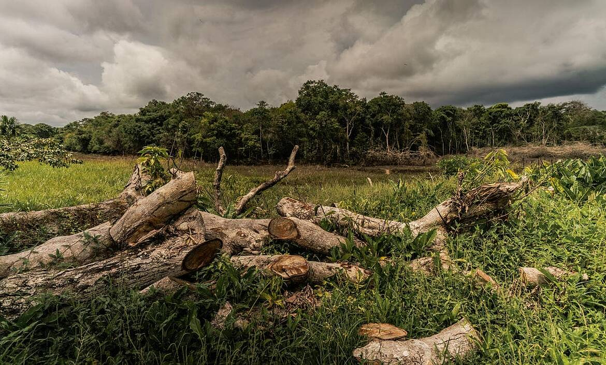
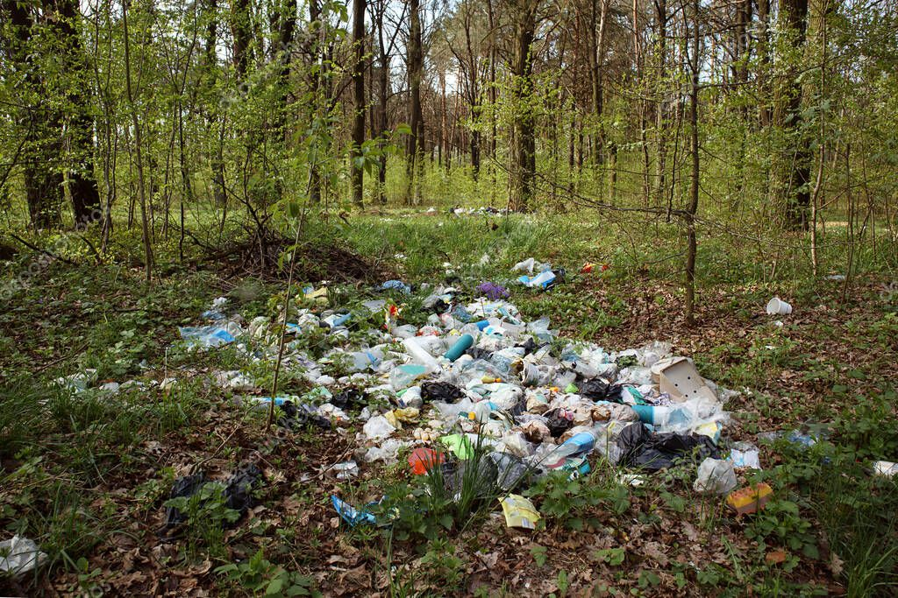
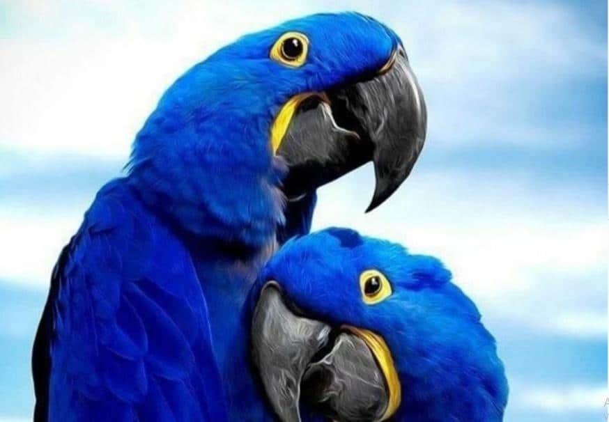
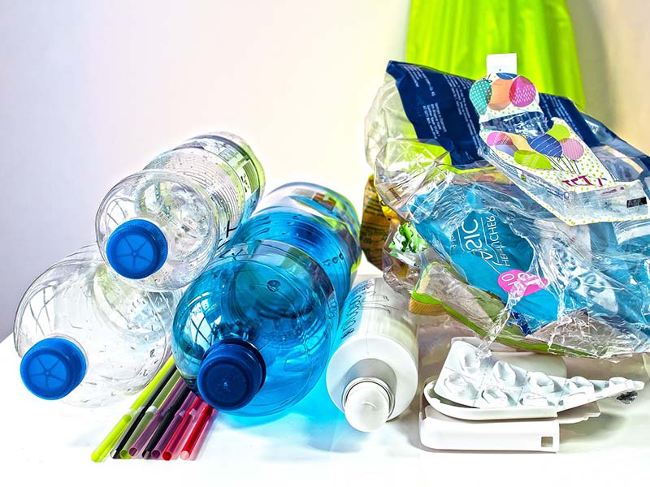

¿Por qué debemos actuar?

El equilibrio de la naturaleza depende de ellos
Los animales en peligro de extinción no solo representan la belleza de la vida salvaje, sino también la salud de nuestros ecosistemas. Cada especie cumple un papel vital: controlan plagas, polinizan plantas y mantienen el ciclo natural del planeta.
Su desaparición provoca un efecto dominó que afecta al clima, los alimentos y al equilibrio ecológico del mundo.
Causas de la Extinción
1. Destrucción de Hábitats
La deforestación, los incendios forestales y la expansión urbana eliminan los espacios donde miles de especies viven y se reproducen.
Sin su entorno natural, muchos animales no pueden sobrevivir ni adaptarse a nuevos ecosistemas.


2. Caza y tráfico ilegal
Millones de animales son cazados por su piel, colmillos o como mascotas exóticas. Este comercio ilegal es una de las mayores amenazas actuales.
La pérdida de individuos clave en una especie reduce su capacidad de reproducirse y debilita la biodiversidad global.
3. Contaminación y cambio climático
El plástico, los desechos químicos y la contaminación de mares y ríos destruyen los hábitats acuáticos. Además, el cambio climático altera los patrones de migración y las fuentes de alimento.

¿Cómo puedes ayudar?

Acciones que generan impacto
- Apoya fundaciones: dona o participa en campañas de conservación.
- Reduce tu consumo: evita productos que provienen de animales en peligro.
- Educa y comparte: informa a tu comunidad sobre la importancia de cuidar el ambiente.
- Cuida tu entorno: recicla, planta árboles y usa menos plástico.
¿Cómo puedes ayudar?
Ayudar a los animales en peligro de extinción es una labor que empieza con la conciencia individual y se fortalece con la acción colectiva. Cada persona puede contribuir de distintas maneras, desde cambiar hábitos cotidianos hasta participar en proyectos de conservación. Cuidar la vida salvaje significa cuidar el futuro del planeta.
- No apoyes el tráfico ilegal de fauna silvestre: Evita comprar animales exóticos o productos derivados de especies protegidas. Este comercio contribuye directamente a la extinción de muchas especies.
- Apoya fundaciones y reservas naturales: Organizaciones como WWF, SERNAP o la Fundación Amigos de la Naturaleza trabajan en la protección de hábitats naturales. Puedes colaborar como voluntario o realizar donaciones.
- Educa y comparte información: Habla con tus familiares, amigos y compañeros sobre la importancia de preservar la biodiversidad. La educación ambiental crea conciencia y motiva a más personas a involucrarse.
- Participa en programas de reforestación: Plantar árboles ayuda a recuperar ecosistemas y a proporcionar refugio y alimento a distintas especies animales.
- Reduce tu impacto ambiental: Reutiliza, recicla y evita el consumo excesivo de plásticos. Usa transporte ecológico siempre que sea posible y fomenta un estilo de vida sostenible.
- Denuncia la caza y el maltrato: Si observas situaciones que amenazan la vida de animales silvestres, comunícalo a las autoridades ambientales locales.
Pequeñas acciones, grandes resultados
Cuando participas en la conservación del medio ambiente, contribuyes a restaurar el equilibrio natural. Las acciones pequeñas, como sembrar un árbol o reducir el uso de plástico, pueden marcar una diferencia a gran escala. Los ecosistemas saludables garantizan el bienestar de todas las especies, incluyendo la humana.
En diferentes partes del mundo, miles de voluntarios colaboran en proyectos de limpieza, rescate y restauración de fauna silvestre. ¡Tú también puedes unirte a este movimiento y ser parte del cambio!
Educar para proteger
La educación ambiental es la herramienta más poderosa para asegurar un futuro sostenible. En las escuelas, universidades y comunidades, enseñar sobre el respeto a la naturaleza ayuda a crear generaciones más responsables y comprometidas con el planeta.
Existen programas educativos que promueven el conocimiento sobre especies en peligro y el cuidado del entorno natural, fomentando una cultura de respeto hacia la vida.


Involúcrate en actividades ecológicas
Existen muchas maneras de ayudar activamente: desde participar en jornadas de limpieza de ríos o playas, hasta colaborar en refugios para animales o en centros de rescate de fauna silvestre.
Cada acción que realizas en favor del medio ambiente contribuye a la conservación de especies y ecosistemas, inspirando a otros a hacer lo mismo.
Adopta hábitos sostenibles
Pequeños cambios en tu rutina pueden generar un gran impacto. Opta por productos reciclables, reduce el consumo de carne, evita plásticos de un solo uso y elige productos ecológicos o elaborados de forma responsable.
Recuerda que vivir en armonía con la naturaleza no solo protege a los animales, sino que mejora nuestra calidad de vida y la del planeta.

Cada acción, por pequeña que parezca, contribuye a la preservación de la vida. Si todos actuamos con responsabilidad y compromiso, lograremos un planeta donde los animales y las personas vivan en equilibrio. El cambio empieza contigo: infórmate, actúa y sé parte de UNIDOS POR LA VIDA.
Más información
Explora más recursos y únete a los esfuerzos globales por proteger a las especies en peligro: